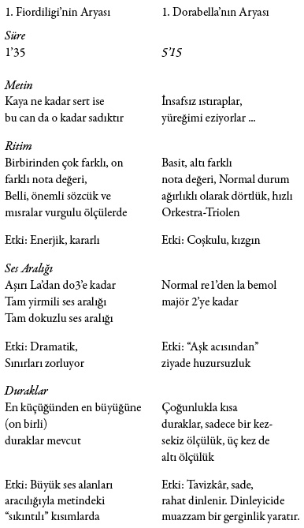
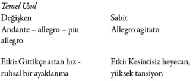
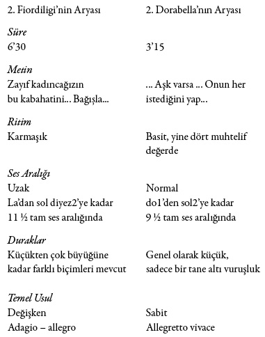

1. Durum
Kız kardeşler erkeklerin küstahlığından şikâyetçidir


2. Durum
Kız kardeşler iki adam karşısında nefislerine yenilirler

Yapıt İncelemesinin Sonucu: Mozart karşımıza birbirinden son derece faklı iki kız kardeş çıkarmıştır. Metindeki nüansları yakalamış, bunları müzikal anlamda daha da geliştirmiştir. Dorabella, Despina’nın akıllı uslu öğrencisidir. Uzaktaki sözlüsünü düşünerek kendini teskin eder. Ama sözlüsü savaşta ölürse, ona boşu boşuna sadık kalmış olacaktır. Böyle olmak zorunda değildir.
Buna karşın kız kardeşi vicdan azabı duyar. O her seferinde yeni bir bahane bulup ateşli âşığı Ferrando’yu kendinden uzak tutmak için çabalar. Sözlüsünün peşinden savaşa gitmek gibi çılgınca bir fikre kapılsa da sonra bu fikirden vazgeçer. Sonunda “Arnavut” eğer kendisini geri çevirecek olursa yeniden intihar edeceğini söyler. Kız ancak o zaman gardını indirir.
İki erkek kardeş cehennem azabı çeker. Özellikle de Guglielmo çok üzgündür; kardeşi Ferrando’nun baştan çıkarıcılığına daha fazla direnemeyen Fiordiligi’sini görmek ona acı verir. Ne var ki Don Alfonso ile girdikleri bahsin şartlarına uymak zorundadırlar. Şartlar uyarınca iki kardeş de oyuna katılmalıdır ve yirmi dört saat daha bitmemiştir. İki kardeş isyanlardadır. İntikam alacaklardır. Kız kardeşler sadakatsizliklerinin bedelini ağır ödeyeceklerdir. Don Alfonso çözüm yolunu bulmuştur: “Kızlarla evlenin, çünkü così fan tutte – Kadınlar hep böyledir! Bunun yanı sıra Alfonso öfkeden küplere binen adamların da gerçek yüzünü ortaya çıkarmıştır. Her ikisi de iki kadını birden sevmektedir; hem “eski sözlülerini”, hem de “yeni talip oldukları kızları”. Peki, şimdi ne olacaktır?
Kurnaz Despina, sonunda kızları “Arnavutlarla” evlenmeye razı eder. Despina ve Don Alfonso her şeyi en ince ayrıntısına kadar düşünmüşlerdir. Don Alfonso nikâh memurunu içeriye getirir. Memur, kılık değiştiren Despina’dan başkası değildir. Bu kez de noter kılığına girmiştir. Belgeleri çıkarır ve bu işi çabucak halletmek ister. Kızlar belgeleri imzalar. Alfonso evlilik kontratlarını eline alır ve zaferini kutlamaya koyulur. Artık elinde kızların sadakatsizliğini kanıtlayan tasdikli bir belge bile vardır, bahsi kazanmıştır.
Ancak, dışarıdan gelen asker şarkıları ve marş sesleriyle kutlama bölünür. Ordular savaştan dönmektedir. Bir panik başlar. Şimdi ne olacaktır? Don Alfonso planının son perdesini sahneler.
Taze damatlar hemen yan odaya saklanır. Savaş kahramanları Ferrando ve Guglielmo içeri girer. Sözlülerinin soğuk tavırları ve ters hareketleri karşısında şaşkındırlar. Büyük bir merakla kıyafet değiştiren noterin Despina’ya dönüşmesini izlerler. Don Alfonso kardeşlere evlilik kontratlarını gösterince kıyamet kopar. İntikam alacaklardır. Bir hışımla odaları ararlar, alçak hasımlarını yakalayıp ortalığı kan gölüne çevireceklerdir. Kızların elinden tir tir titremekten ve dua etmekten başka bir şey gelmez.
Son bir sürpriz daha vardır. Subaylar aslında “Arnavutların” da kendileri olduğunu açıklarlar. Kızlar allak bullak olur. Erkekler nişanlılarının vefasızlığına öfkelidir, kadınlar ise onları oyuna getirdikleri için erkeklere kızgındır. Tüm bu duygu kasırgasının ortasında Don Alfonso kıyıya vuran dalgalara direnen bir kaya gibi dimdik durur ve insan sarrafı olmanın keyfini sürer. Hedefine ulaşmış, iki erkek kardeşe hayatları boyunca unutamayacakları bir ders vermiştir. Herkesin şimdi ona “suçlu” diye saldırması gayet normaldir. O bunu anlayışla karşılar. Sonunda herkes birbirinden özür diler, birbirini affeder. Perde kapanır. Finito.